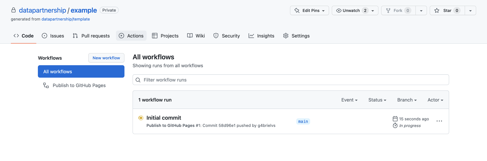
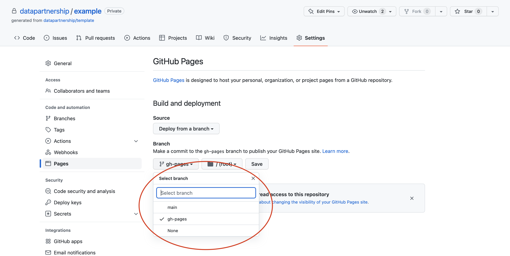

README files are important and often neglected. The files should provide anyone with information about the first steps to use, learn and contribute to your project. Please repurpose as required.
GitHub allows to customize how issues and pull requests are presented to the public. Custom templates encourage collaboration and maintainability.
docs
Documentation is often never priotized until last minute. The template aims to revert the malpractice by setting up the documentation as an integral part of the code repository. With the power of Jupyter Book, data practioners have a way to share beautifully rendered Jupyter notebooks using GitHub Pages in a standardized and effortless way.
data
Placeholder folder for data. Data is immutable. By default, the data folder is present but ignored from version control, in order to prevent files of being mistakenly versioned in the code repository.
notebooks
Placeholder folder for Jupyter notebooks. Markdown files and Jupyter notebooks can be added to docs/_toc.yml (Table of Contents) to compose the the documentation.
Important
Admittedly, even the best of the templates would never be perfect; the template aims to encourage teams to start thinking and assimilate best practices, collaborative coding, documentation​, reproducibility​ as an integral part of the project. In a standardized way.
The template is GitHub template repository; in other words, you can generate a new repository with the same files and folders to use as the starting point for your project with a click of a button.
After creating the repository from the template, the documentation will be automatically built as a Jupyter Book via GitHub Actions from the main branch and deployed to the gh-pages branch on every commit.

To publish the documentation, please enable GitHub Pages by going to the repository’s settings (Settings>Pages), and selecting to deploy the from gh-pages branch.

Tip
The documentation can be published from either public and private repositories. If publishing private content, please remember to abide by your organization’s Data Privacy Policy.
Replace or repurpose README and community files
The template comes with README and community files, including this README, to ensure the repository can be legally shared (otherwise, if a repository has no license, all rights are reserved) and to encourage collaboration.
CODE_OF_CONDUCT
CONTRIBUTING
LICENSE
README
GitHub Issues and Pull Requests templates
Please replace or repurpose the files with information about your project.
See also
For additional information and examples, we recommend Awesome README
Congratulations! You just created a beautiful home for your project. To access (and share) your project page, use the link as it shows below.
The template is created as a Jupyter Book - an open-source project to build beautiful, publication-quality books and documents from computational content.
Let’s see below how to add and publish new content for your project.
The template comes with an example of Jupyter notebook - notebooks/world-bank-api.ipynb.
Jupyter Book will execute notebooks during the build and display code outputs and interactive visualizations as part of the documentation. By default, the template will execute any content files that have a notebook structure listed on the table of contents.
Important
Note that all Jupyter notebooks will be executed by GitHub Actions during build. In case you would like to ignore any files, you can exclude files from execution.
The following is the template’s suggested project and documentation structure inspired by the Cookiecutter Data Science.
├── README.md <- The top-level README to get started using this project.
├── data <- Placehodlder. IMPORTANT: Data must not be commited to GitHub
├── docs <- Documentation create with Jupyter Book
├── _config.yml <- Jupyter Book configuration
│  └── _toc.yml <- Jupyter Book table of contents
├── notebooks <- Jupyter notebooks
└── world-bank-api.ipynb <- Jupyter notebook example
├── Makefile <- Makefile with commands like `make docs` or `make data`
├── requirements.txt <- Python requirements
├── CODE_OF_CONDUCT <- The top-level CODE_OF_CONDUCT
├── CONTRIBUTING <- The top-level CONTRIBUTING
└── LICENSE <- The project license
This book is intended to serve as an introduction to the primary tasks required in development research, from experimental design to data collection to data analysis to publication. It serves as a companion to the DIME Wiki and is produced by DIME Analytics.